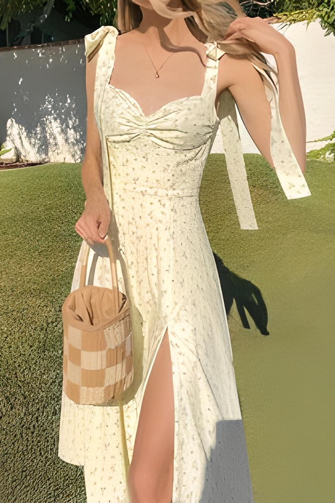
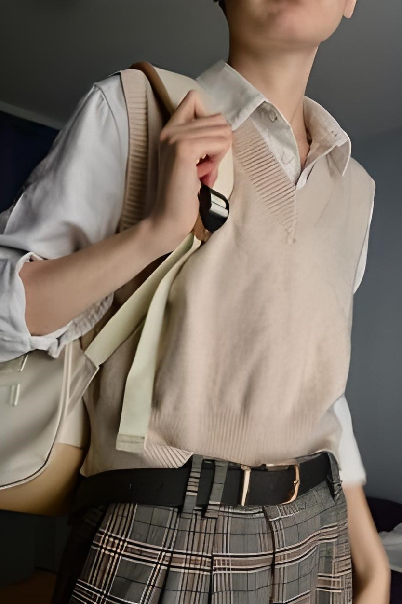

El estilo romántico es uno de los tipos de moda más longevos que se remonta a la antigua Grecia, sin embargo, continúa estando vigente hasta el día de hoy. Se caracteriza por sus estampados florales, el uso de lazos y mangas abultadas.
Para adquirir un tipo de moda romántico y lucir como uno de los personajes de Orgullo y Prejuicio, debes seguir las siguientes pautas: